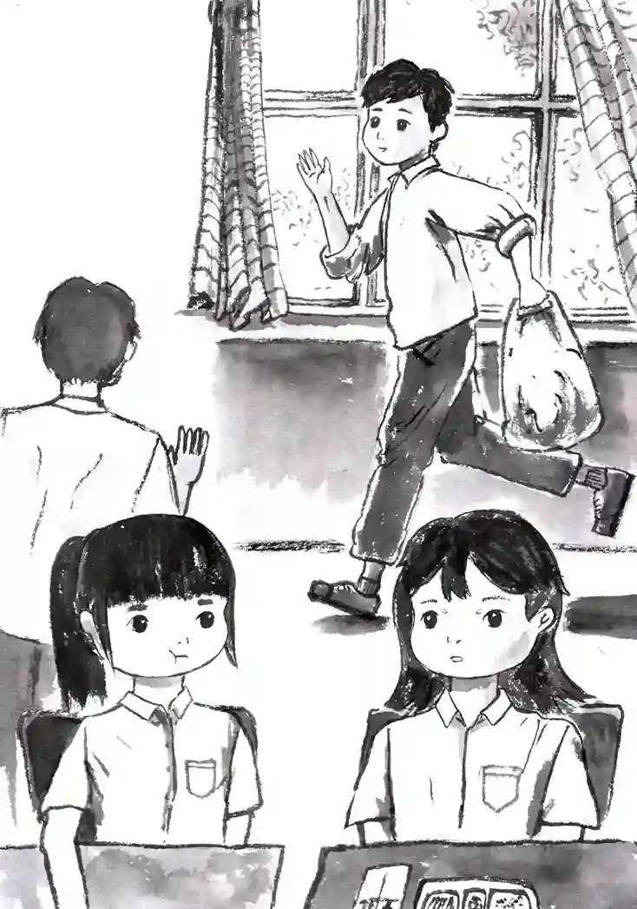

第5章

隔天早上，徐心昀不經意的瞥了一眼擱在書桌上的中秋烤肉邀請小卡，鬼使神差的，在出門前將它放進書包裡。雖然她並不覺得自己會去邀請劉萱樂，但把邀請卡放入書包的這個舉動，彷彿暗示著邀請的意圖已經完成了一大半。
「那麼四捨五入下來，應該也算是邀請過了吧！」徐心昀像是在跟誰解釋般，小聲的說道。
清晨的陽光被大片的雲層遮擋在天際，散射成柔和的光芒，映照出一片寧靜的校園。儘管還未到點名時間，但有不少學生卻都提早進入到各自的班級內，有的正安靜自習著，有的則與三五好友低聲交談。微風似乎也被校園的氣氛感染，不約而同的走進教室，帶來些許涼意。
徐心昀剛走進教室，就聽到散落在空氣中的談笑聲，以及劉萱樂響亮的招呼聲：「唷，心昀，早啊！」
除了徐心昀外，班上的其餘同學紛紛皺起眉頭，投去困惑的目光。意識到自己似乎打擾到教室清淨，劉萱樂吐了吐舌頭，趕緊合十雙手低聲抱歉了幾句。
原本因為被迫早起上學，還有些昏昏欲睡的徐心昀，此時也瞬間有了精神，輕聲回應：「早呀！」
注意到劉萱樂身邊還聚集著其他同學，徐心昀放下書包，走了過去：「你們在聊什麼啊？」
看見徐心昀走了過來，劉萱樂的眼神有點閃爍，似乎不太希望徐心昀參與到他們的聊天中。然而徐心昀卻完全沒發現好友的異常，拉開一旁空著的課桌椅，很自然的靠了過來。
雖然有些奇怪劉萱樂怎麼沒有回應徐心昀，但其他人也沒多想，便相繼解釋起來：「你知道下個月的同志遊行嗎？我們在想要不要也去湊個熱鬧。」
「對啊，雖然我不是同性戀，但看他們的宣傳說陳芳語會去表演。我還沒在螢幕外看過陳芳語欸！」
「那天剛好是10月28號，我們才剛剛考完一段。徐心昀，你要不要也一起來？」
「同志、遊行嗎？」徐心昀微不可察的皺了皺眉，突然有些後悔自己什麼狀況都沒搞清楚就加入進來。雖然她本身對多元文化並沒有抱持任何想法，但在教會中，有不少長輩都是持反對意見。她不確定自己到底能不能去同志遊行。
看見徐心昀的遲疑，其中一位同學，蔡元長半開玩笑的說道：「怎麼那麼猶豫，你該不會跟林恆陽一樣是基督徒，討厭同性戀吧？」
「沒、沒有啦，我怎麼會。」徐心昀趕緊否認：「只是下個月太遙遠了，我還不確定那一天到底有沒有空。」
知道徐心昀是基督徒的劉萱樂，似乎也明白此時的話題對於徐心昀來說有點尷尬，連忙幫著打圓場：「對啊，一個多月以後的事，現在說還太早啦！像我們家的家庭聚會也還沒確定到底要辦在28號還29號。」同時試著將話題的焦點轉移到自己身上。
徐心昀則在一旁小心翼翼的觀察蔡元長，試圖從他的表情中找出一點端倪，以確定他剛剛的話是隨口亂說，還是有的放矢。
「誒？你剛剛不是還說你那一天有空要一起來的嗎，怎麼又突然冒出一個家庭聚會了？」蔡元長果然不負所望的將話題轉離徐心昀。
劉萱樂攤開雙手，故作無奈道：「剛剛你們只說是下個月啊，又沒說是28號，我怎麼知道嘛！」
見大家不再看向自己，轉而繼續談論有關多元文化的議題，徐心昀高懸的心，才重新落回肚子裡。她靜靜的坐在一旁，不太敢加入話題，深怕眾人又再度起疑。只有當其他人詢問起她的看法時，才隨口嗯啊幾句的應付。
沒過多久，劉萱樂便發現了好友的不自在。她輕輕走到徐心昀旁邊：「心昀，你昨天的數學作業會寫嗎？我最後一大題搞不太明白欸。」
徐心昀感激的看向劉萱樂，明白對方給創造了一個讓自己離開這裡的理由：「哦哦，那題不算太複雜，我教你怎麼算。」
劉萱樂並沒有打斷正在說話的蔡元長，而是透過眼神示意身旁的同學。雖然兩人只是低聲耳語，但在她們的刻意安排下，周遭的同學們仍然能夠聽清她們剛才的對話。因此大家朝她們輕輕的點頭表示理解。
徐心昀走回自己的座位，癱在桌上心有餘悸的說道：「剛剛、真的是，唉！」
劉萱樂也略為愧疚道：「抱歉啊，事情發生的實在是太快了，我都不曉得要用什麼方法暗示你不要過來。」
徐心昀悶悶的看向窗外：「算了，反正最後什麼事情也沒發生。」
窗外的太陽躲在厚重的雲後面，不知道只是單純的因為懶散而不想出來，還是因為地面上有讓它害怕的東西而不敢出來。陰天，雖然沒有雨天纏綿，卻也朦朧，像是此刻徐心昀的心情，蒙著一層淡淡的沮喪，混亂的抓不到一絲清明。她的眼神在窗外游移，目光試圖穿越陰霾，卻不知道要尋找什麼。
隨著上課鐘聲的響起，徐心昀不再去回想早自習發生的事，轉而將自己的心思全部投入到老師的上課內容當中。
上午的課程如流水般匆匆而過，學生們還沒徹底消化吸收完黑板上的知識重點，午餐的鐘聲已猝不及防的響起。
等老師帶著教材離開教室後，蔡元長便迫不及待的走上講臺，拿起麥克風大聲宣布：「吃飯時間到啦！快快，有一起訂午餐的都過來猜拳，看今天誰下去拿飯上來！」
蔡元長的話像是按下了一個混亂開關，教室內頓時陷入一片騷動。有人斥喝蔡元長擋住大家抄筆記的黑板，有人興奮的奔向其他班級，還有些人則正大光明的把手機從抽屜裡拿出來，開始與好友連線進行遊戲。
徐心昀看著自己伸出「布」的手，忍不住唉嘆道：「啊啊啊～怎麼又是我下樓拿午餐，已經連續三天了。你們是不是故意串通好讓我輸的啊！」
蔡元長指著教室門口，大笑道：「就決定你了，徐心昀，去吧！」
劉萱樂站在人群中也忍俊不禁，攬著徐心昀的肩走出教室：「好啦，別難過了，今天我也陪你一起去拿就是了。」
無奈的走下樓，徐心昀在內心暗自提醒自己，明天猜拳時無論如何都不能再出「布」了。
教室外陰沉的天氣依然壓抑著校園，陽光仍舊藏在厚重的雲層後面，只留下些許斑駁的光影灑在地面上。
站在校門口旁的空地，徐心昀再一次低頭看了眼手機上的時間，忍不住對劉萱樂抱怨道：「今天這家怎麼這麼慢啊，回去把它從菜單中刪掉，以後不要再點這家了。」擡起頭的一瞬間，她的餘光掃到遠處教學大樓旁的花壇，鮮豔的花朵在微陰的校園中增添的一抹色彩，毫無緣由的，吸引了徐心昀的目光。
劉萱樂察覺到徐心昀的視線，便也跟著望向那處，好奇問道：「在看什麼呀？」
徐心昀將目光稍稍偏移，發現花壇旁還坐著兩位同學正在一起吃午餐，她指向兩人不確定道：「那是林恆陽吧，另外一位好像也是我們班的同學？」
劉萱樂半瞇著眼睛，細看片刻後說道：「好像是新來的轉學生吧，叫王啟年，印象中。」
徐心昀恍然道：「哦，對，是王啟年！」
雖然不知道自開學後一直獨來獨往的轉學生，什麼時候跟林恆陽變熟悉了，但徐心昀也沒有多想。反倒是看著同為基督徒的林恆陽，不禁想起自己還肩負著一個邀請劉萱樂去教會的任務。
「此時只有自己跟劉萱樂兩個人，完全是一個絕佳的機會！」徐心昀在心裡對自己鼓勵道。但很快的，她又找了一個滿意的藉口否決了內心的提議：「算了，邀請卡沒帶在身上，這樣的邀請感覺太隨意了，下次再找機會吧！」
等徐心昀和劉萱樂拿到午餐回班上時，已經十二點半左右了。剛將便當放到講臺上，就聽到衛生股長朝全班大喊：「今天的值日生是誰啊？快去倒垃圾，四十分以後再去倒就要被扣分了！」隨即看了眼黑板右下角的座號，繼續皺眉喊道：「27號是誰啊，今天值日生自己都不知道嗎！」
雖然衛生股長又高聲喊叫了好一陣子，但卻沒有多少人能聽清他的話。還留在教室的同學幾乎全擠到了講臺前，焦急的尋找自己的午餐，以至於衛生股長的聲音被淹沒在這騷動之中。
終於，拿了便當走回自己座位的蔡元長，發現了衛生股長的存在，並給出了一個建議：「找不到值日生的話，要不要問問林恆陽啊？」
衛生股長看了眼時間，煩躁道：「我都找不到值日生了，難道他就能找到？」
蔡元長聳了聳肩：「他找不找的到我是不知道啦，但像這種情況，百分之兩百他就會自己拿去倒了。反正如果你不想自己去倒垃圾的話，就去問問林恆陽知不知道值日生去哪了，準沒錯！」
「是嗎？」衛生股長半信半疑的拿出手機來傳訊息給林恆陽。果然沒過多久，就見林恆陽風風火火的走進教室。
衛生股長朝蔡元長投去一個欣喜的眼神，便拉著林恆陽走向教室後方。
原本因為快到午休時間而在努力幹飯的劉萱樂，突然用筷子指向教室後方，對徐心昀說道：「咦？林恆陽不是前幾天才當過值日生的嗎，怎麼今天又輪到他倒垃圾了？」
徐心昀回過頭看了一眼，也奇怪道：「對啊，他剛剛不是還跟那誰一起在樓下吃午餐的嗎？」
「算了，不管他了。」劉萱樂放下餐盒，站起身來：「我吃飽啦，先拿去丟了。」
看了眼自己還剩一半的午餐，徐心昀驚訝道：「不是吧，你也吃太快了！」
劉萱樂嘻嘻一笑：「我中午需要睡覺，不像你一樣，下午上課也不會睡著。」
身邊少了一位狼吞虎嚥的身影，徐心昀的吃飯速度也隨之慢了下來。她從抽屜裡拿出手機，找了一部下飯短片，一邊吃飯一邊看了起來。
過了一陣子，徐心昀聽到右手邊傳來椅子滑動的聲音。擡頭一看，發現林恆陽此時才回到自己的座位上。她疑惑的看了眼手機上的時間，還有幾分鐘下課鐘聲就要響了。真不曉得為什麼林恆陽只是去倒個垃圾，卻花了這麼長的時間。
就在徐心昀感到困惑之際，她注意到還有另一個人也走進了教室。王啟年滿臉笑容地對著剛回到位子上的林恆陽點了點頭，然後悄然走向自己的座位。
這一幕讓徐心昀不禁好奇了起來，在她的印象中，王啟年臉上還沒有出現過如此燦爛的笑容。直覺告訴她，這個變化與她身旁的林恆陽有關。但徐心昀卻猜不出他們之間發生了什麼事，讓他們僅在一個中午，就變得如此熟悉。